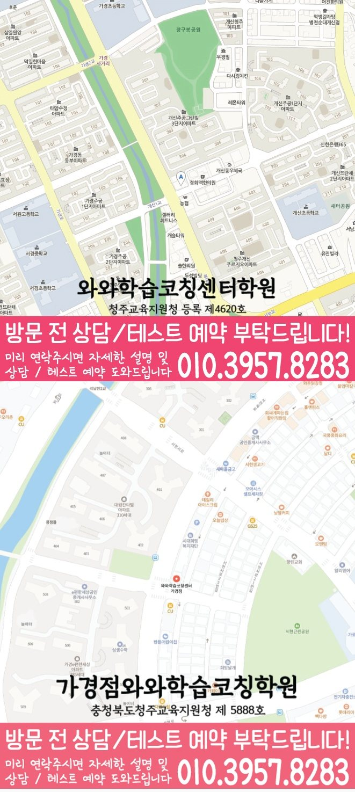

30초 핵심 안내
가경동 수학학원 선택 전 확인할 기준
가경동에서 수학학원을 비교할 때에는 과목 수보다 학교 학습과 문장제 조건 해석과 식 세우기가 한 주 계획으로 이어지는지 확인해야 합니다. 제공 주소는 충북 청주시 흥덕구 서현북로 18 2층 와와학습코칭학원이고, 제공된 학교 참고 정보는 서현초·서경초·서현중·경덕중·사대부고·서원고·청주외고이며 학생별 우선순위는 실제 학습 자료를 근거로 정합니다.
Math Learning Guide
가경동 수학학원을 찾는 학부모를 위해 초·중·고 학생의 학년 단계, 문장제 조건 해석과 식 세우기, 과제와 오답 점검 기준을 안내합니다.
30초 핵심 안내
가경동에서 수학학원을 비교할 때에는 과목 수보다 학교 학습과 문장제 조건 해석과 식 세우기가 한 주 계획으로 이어지는지 확인해야 합니다. 제공 주소는 충북 청주시 흥덕구 서현북로 18 2층 와와학습코칭학원이고, 제공된 학교 참고 정보는 서현초·서경초·서현중·경덕중·사대부고·서원고·청주외고이며 학생별 우선순위는 실제 학습 자료를 근거로 정합니다.
수업 안내 이미지

센터 위치 안내

충청북도 청주시 가경동에서 수학학원을 찾는다면 처음 설명을 들을 때 가장 필요한 답은 막연한 평가가 아니라 학습자의 오류 유형을 어떤 순서로 점검할지에 관한 설명입니다. ‘학년별 수학 진도와 복습의 균형’을 살펴볼 때는 현재 개설 또는 적용 여부와 대상, 실제 진행 단계를 나누어 확인해야 하며 명칭만으로 수업 효과를 판단하지 않습니다. 가경동 안내 주소는 ‘충북 청주시 흥덕구 서현북로 18 2층 와와학습코칭학원’입니다. 직접 확인하기 전에는, 가경동에서 방문을 준비할 때 안내 주소만을 근거로 이동 편의나 주변 조건을 판단하지 말고 실제 방문 전에 경로를 확인하세요. 덧붙여, 가경동에서 영어·수학 두 과목에 관한 상담을 함께 준비하더라도 과목별 대상과 학습 절차는 각각 확인하세요. 설명을 위해 ‘새 단원을 시작할 때, 정의를 읽어도 핵심 용어 사이의 관계를 말하기 어려워하는 학생’이라는 가상 고민 유형을 정했습니다. 또한, 본문에서는 새 개념의 뜻을 설명하고 문제에 적용하는 과정에서 보이는 행동을 기준으로 학습 방향과 선택 항목을 단계별로 정리합니다.
충청북도 청주시 가경동 학생의 수학 학습을 관리하려면 학교 일정, 통원 시간, 복습 가능 시간을 한 흐름으로 봐야 합니다. 센터 위치는 충북 청주시 흥덕구 서현북로 18 2층 와와학습코칭학원입니다. 수학 가능 학년은 초3·초4·초5·초6·중1·중2·중3·고1·고2·고3입니다. 최근 학습 기록을 준비해 상담하는 방식이 적절합니다.
가경동 학교별 진도와 평가 방식은 같지 않으므로 서현초·서경초·서현중·경덕중·사대부고·서원고·청주외고 등 제공 학교 정보는 상담 준비의 출발점으로만 사용합니다. 실제 계획은 학생이 사용하는 교재, 시험 범위, 오답 기록을 확인한 뒤 결정합니다.
와와학습코칭센터 가경점의 제공 자료에는 충청북도청주교육지원청 제 5888호가 표시되어 있습니다. 가경동 학부모는 이 정보와 교습비 자료를 확인한 뒤 수업 시간뿐 아니라 과제 확인과 재학습 방식까지 질문하는 편이 좋습니다.
현재 상태를 점검하며, 새 학년의 첫 진도를 정하기 전에 이전 범위와 현재 문제를 한 문항씩 나란히 볼 수 있습니다. 두 문제에서 공통으로 필요한 개념과 자녀가 설명하지 못한 지점을 별도로 기록합니다. 특히, 학년 정보만으로 선행 비중을 미리 결정하지 않습니다.
아울러, 풀이 흔적을 보면 기초의 빈틈을 용어, 조건 읽기, 계산, 이유 설명으로 나누어 볼 수 있습니다. 이 가상 학생 유형에서는 개념을 자기 말로 설명하고 예에 적용하는 장면을 중심으로 처음 어긋난 항목 하나를 표시합니다. 상담을 준비할 때, 답을 맞혔더라도 선택 이유를 설명하지 못하면 재확인 질문으로 남깁니다. 아울러, 단원 전체에 대한 평가보다 구체적인 행동과 다음 문제를 기록하는 편이 안전합니다.
특히, 연습 계획은 단원 목록보다 ‘설명하기·적용하기·혼자 다시 풀기’처럼 행동 순서로 적는 편이 분명합니다. 직접 확인하기 전에는, 새 개념의 뜻을 설명하고 문제에 적용하는 과정을 첫 점검 대상으로 두고 한 번에 한 목표만 정합니다. 목표를 마친 뒤에는 오류가 생긴 이유를 정리하고 핵심 용어나 예시가 달라져도 정의의 뜻과 적용 이유를 설명하는지 살펴봅니다. 다음 단계로 넘어가는 기준과 다시 살펴볼 날짜를 가경동 상담에서 함께 설명을 요청하세요.
문의 항목을 나눌 때, 가상 학생 유형에게 필요한 첫 목표 하나를 기준으로 상담 내용을 대조합니다. 특히, 가경동에서 정의 이해와 적용을 살필 때, 설명 방식이 그 목표와 이어지는지, 혼자 풀 기회와 오답 확인이 있는지, 피드백을 누가 볼 수 있는지 각각 묻습니다. 가경동에서 정의 이해와 적용에 관한 상담용 질문을 정리할 때, 대상이나 조건이 빠진 답은 추가 질문으로 돌리고 추측해 채우지 않습니다. 가경동에서 받은 답은 같은 기준으로만 비교합니다.
가경동에서 정의 이해와 적용에 맞는 조건을 비교할 때, 일정한 공부 흐름을 만들려면 시작 신호와 마감 기준을 먼저 정합니다. 중간에는 새 개념의 뜻을 설명하고 문제에 적용하는 과정에서 막힌 위치를 표시하고 도움을 요청할 시점을 옮겨 적습니다. 가경동에서 정의 이해와 적용을 살필 때, 끝난 뒤에는 오답 한 개와 다음에 다시 볼 날짜만 남겨도 됩니다. 이런 기록을 수업이나 피드백에 활용하는 절차가 있는지는 설명을 들을 때 직접 점검해야 합니다.
‘학년별 수학 진도와 복습의 균형’은 수업 형태처럼 읽힐 수 있으므로 실제 개설 여부와 대상 학년부터 상담에서 확인해야 합니다. 가경동 문의 과정에서 수업이 있다면 학생이 직접 설명하거나 질문하고 풀이할 기회가 어떻게 구성되는지 설명을 요청할 수 있습니다. ‘새 단원을 시작할 때, 정의를 읽어도 핵심 용어 사이의 관계를 말하기 어려워하는 학생’ 고민에 관한 학습 질문과 구분해, 교사의 개입 시점, 개별 과제의 범위, 오답을 다시 보는 절차, 피드백 전달 방식도 서로 나누어 확인합니다. ‘학년별 수학 진도와 복습의 균형’이라는 표현을 검토할 때 반 이름만으로 인원, 시간표, 효과를 추정하지 말고 현재 운영 조건과 학생의 고민이 맞는지를 비교합니다.
체크리스트를 학생 학습, 개념 이해와 문제 적용의 연결, 위치 정보, 미확인 운영 정보의 네 묶음으로 나눕니다. 학생 학습에서는 정의 이해와 적용의 첫 목표와 완료 기준을 옮겨 적습니다. ‘개념 이해와 문제 적용의 연결’이라는 수업 명칭과 현재 개설 또는 적용 여부 및 대상을 구분했는지 확인합니다. 가경동에서 ‘개념 이해와 문제 적용의 연결’ 관련 사실과 확인 전 정보를 나눌 때, 학교 표기 ‘서현초’는 정확한 학년과 범위를 전달하는 데만 활용하고 학원과의 관계를 뜻한다고 보지 않습니다. 또한, 비용·일정·담당 방식의 빈칸은 다음 문의로 남겨 둡니다.
Information Basis
센터명·주소·등록번호·학교 참고 목록은 제공 자료 범위에서 확인했습니다. 실제 수업 가능 학년과 과목, 시간표는 상담 시점에 다시 확인해야 합니다.
FAQ
학년과 진도 정보만 보고 비중을 정하지 말고 먼저 핵심 용어나 예시가 달라져도 정의의 뜻과 적용 이유를 설명하는지 살펴보세요. 확인되지 않은 연결 지점은 복습 범위로 좁히고, 설명과 적용이 가능한 뒤에 후속 학습 범위와 점검 시점을 정할 수 있습니다.
가경동 페이지에는 구체적인 인원이 없습니다. 현재 정원, 자녀의 질문·풀이 근거 설명 기회, 개별 피드백 범위를 따로 확인한 뒤 새 개념의 뜻을 설명하고 문제에 적용하는 과정을 살피는 데 필요한 조건과 맞는지 검토하세요.
‘개념 이해와 문제 적용의 연결’이라는 표현만으로 현재 개설 여부나 수업 방식을 확정할 수는 없습니다. ‘개념 이해와 문제 적용의 연결’을 알아볼 때 현재 개설 여부와 대상부터 확인한 뒤 학생의 설명·질문·풀이 참여, 교사의 개입 시점, 오답과 피드백 절차를 각각 물어보는 것이 좋습니다.
가경동에서 ‘문장제 조건 해석과 식 세우기’ 관련 사실과 확인 전 정보를 나눌 때, 가경동이라는 지역명은 페이지의 범위를 나타내고 주소는 방문 위치를 대조하는 정보입니다. 이때, 두 항목만으로 이동 시간, 통학 편의, 건물 출입 조건이나 주변 환경을 추정하지 말고 필요한 내용은 직접 확인하세요.
Parent Perspective
※ 가경동 학부모가 상담에서 확인할 상황을 재구성한 예시이며, 실제 수강 후기나 특정 성적 결과가 아닙니다.
다음 내용은 학습 고민을 설명하기 위한 가상 예시입니다. ‘새 단원을 시작할 때, 정의를 읽어도 핵심 용어 사이의 관계를 말하기 어려워하는 학생’이라는 가상 학생 유형을 설정합니다. 가경동 설명을 들을 때 이 가상 고민 유형을 설명하기 위해 보호자는 학생이 정의를 자기 말로 설명한 문장, 핵심 용어 사이를 연결한 표시, 그 정의를 적용한 짧은 문제 한 개를 함께 준비합니다. 상담을 준비할 때, 가경동 상담용 메모에는 새 단원의 첫 문제에서 학생이 처음 한 행동도 표시합니다. 이때, 이 가정에서는 새 단원을 시작할 때에 학생이 멈춘 지점을 먼저 전달합니다. 가경동에서 ‘오답 원인과 재확인 순서’ 관련 사실과 확인 전 정보를 나눌 때, 이어서 정의 이해와 예시 암기를 구분하는 방법, 설명한 뜻을 새 문제에 적용했다고 볼 수 있는 기준을 물어봅니다. 여기서, 가경동 문의 과정에서는 추가로 새 단원을 처음 접한 장면에서 같은 행동을 어떻게 관찰하는지도 확인합니다. ‘오답 원인과 재확인 순서’에 관해서는 현재 개설 여부와 대상, 학생의 설명·질문 기회, 교사의 개입 시점이 어떻게 되는지도 함께 묻습니다. 오답 원인과 재확인 순서의 현재 개설 또는 적용 여부와 대상은 상담에서 구체적인 답을 받기 전까지 가정하지 않습니다. 오답 원인과 재확인 순서 확인 질문까지 포함한 가상의 준비 과정일 뿐 실제 수업 운영이나 개선 결과를 보여 주는 사례가 아닙니다.